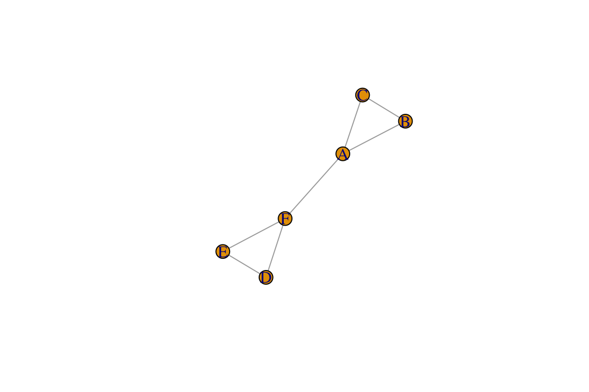
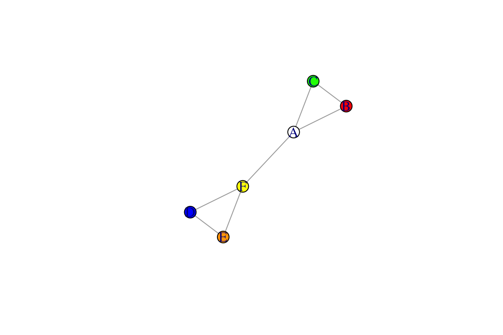
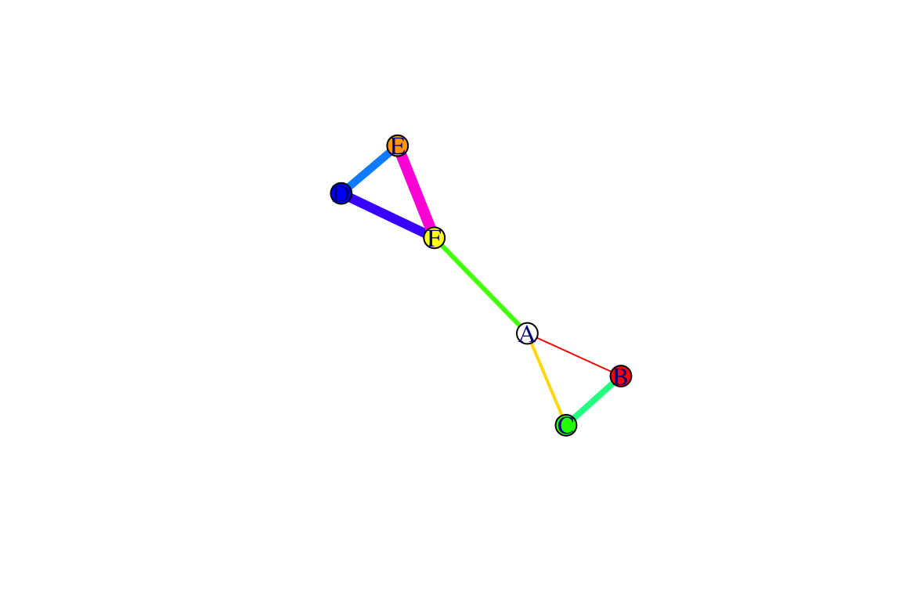

##1.1 The R programming language R is a free, cross-platform, open-source programming language that allows you to do data manipulation, conduct a wide variety of tasks such as data manipulation, data analysis, produce beautiful graphs, put together and run simple models, simulations, etc. One of the huge advantages is that there is a large community of users within the scientific community producing new and improved ‘packages’, or bundles of functions and datasets that are useful for a particular set of tasks. Anyone can put together an R package. However, there are some guidelines (e.g., there must be a help file with certain level of detailed information). R packages that have been vetted are archived in the Comprehensive R Archive Network (CRAN), and those that are deposited on this server can be downloaded from within the R command console
For the purposes of this workshop, I will assume that you are already familiar with R. However, I try to explain codes in a friendly way so that complete novices should be able to mostly keep up. Rstudio
There are many ways to run R. You can just run R directly or use software that is designed to provide a computing environment that helps you stay organized and efficient (called ‘integrated development environment’, or IDE). In this workshop, we will use one such software called Rstudio. The benefit to Rstudio for me is that it looks the same in Mac and Windows, so it makes it easier to demonstrate codes. It is also very popular so many participants are likely to be familiar with it.
##1.2 The igraph Package As with many other types of
analyses, there are a ton of R packages available for network analysis.
In this course, we will be primarily using the igraph
package (Gabor & Nepusz 2006, http://igraph.org), which combines ease of
use and high-level computation (it is also available for Python and
C/C++). This package has proven to be very useful, and it covers a lot
of basic network analysis methods as well as plotting capabilities.
However, there may be certain situations in which you will want to use
other network packages. We will be introducing some of these other
packages as we go.
If you’ve done the “Before you start” section, you will already have
installed teh igraph package on your machine. Let’s go
ahead and look at this package offers:
library(help='igraph')This should open a new window that gives you a lot of info. The Index shows all of the functions that come as part of the package.
Now we want to try getting information on some of these. However, first, we have to load the package before we can begin to use it. Then, try looking up some functions:
library(igraph) #load the package
?graph_from_adjacency_matrix###1.2.1 Our first network!
Let’s jump right in and try making a network using the
igraph package. Here, we will manually make a network using
the make_graph() function. You likely won’t use this
function that often, but it is very useful for the purpose of
demonstration.
g=make_graph(~A-B-C-A, D-E-F-D, A-F)
plot(g)
Congratulations! You made your first network.
So what did we do in the codes above? We used a
make_graph() function to two make two triangles (A-B-C-A
and D-E-F-D) and connect two nodes from those two triangles (A-F). We
then used theplot() function to make the network
figure.
NOTE that your network plot might be oriented differently than this one. Try running this command over and over again. You will notice that the plot will come out slightly differently each time. Think about what changes and what does not change. Does this mean the network changes? We will tackle issues regarding network layout a little bit later.
Now let’s learn a little bit about this object, g , that we have created.
class(g)## [1] "igraph"You can see that g is an ‘igraph object’. This means
that it is now a graph or network. You can see more
details about this object by simply:
g## IGRAPH 7a50406 UN-- 6 7 --
## + attr: name (v/c)
## + edges from 7a50406 (vertex names):
## [1] A--B A--C A--F B--C D--E D--F E--FAs you can see, simply printing g will display the bare
minimum information: “UN” means “Undirected network
with Names of vertices”, and the numbers indicate that
there are 6 vertices and 7 edges. The second line shows that there is
attribute called ‘name’. The characters inside the parentheses (v/c)
indicates that it is a ‘vertex attribute’ and that it is a ‘character’
attribute (i.e., rather than numeric or integers). The third and fourth
lines show us the 7 edges that exist in this network.
We can look up the vertices and edges using this special syntax:
V(g) #look up vertices ## + 6/6 vertices, named, from 7a50406:
## [1] A B C D E FE(g) #look up edges## + 7/7 edges from 7a50406 (vertex names):
## [1] A--B A--C A--F B--C D--E D--F E--FIn addition, we can look up vertex attributes. We currently only have one vertex attribute, called ‘name’:
V(g)$name## [1] "A" "B" "C" "D" "E" "F"We can also create new vertex attributes using this syntax. Certain attribute names can be directly interpreted by igraph for example, the vertex attribute ‘color’ will automatically be interpreted for plotting the network. Let’s try this out:
V(g)$color=c("white", "red", "green", "blue", "orange", "yellow") #a random set of colors
plot(g)
We can also add edge attributes. Let’s try adding two edge attributes, width and color.
E(g)$width=1:7
E(g)$color=rainbow(7) #rainbow() function chooses a specified number of colors
plot(g)
You can see that now the edges are slightly different widths: these could represent the variations in the strength of relationships between nodes in a weighted network.